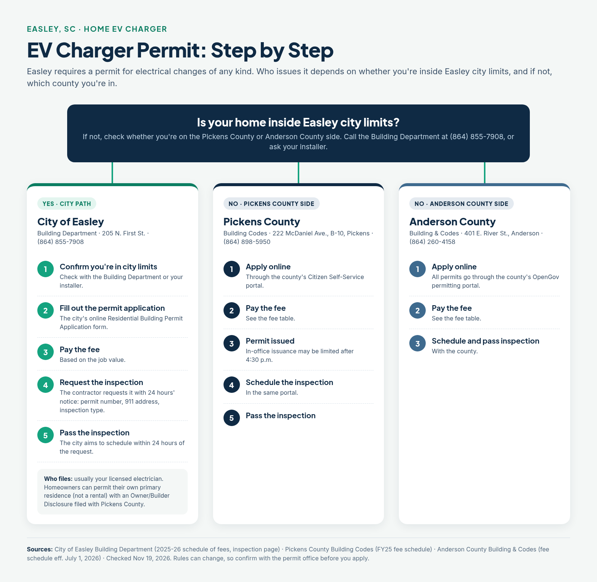
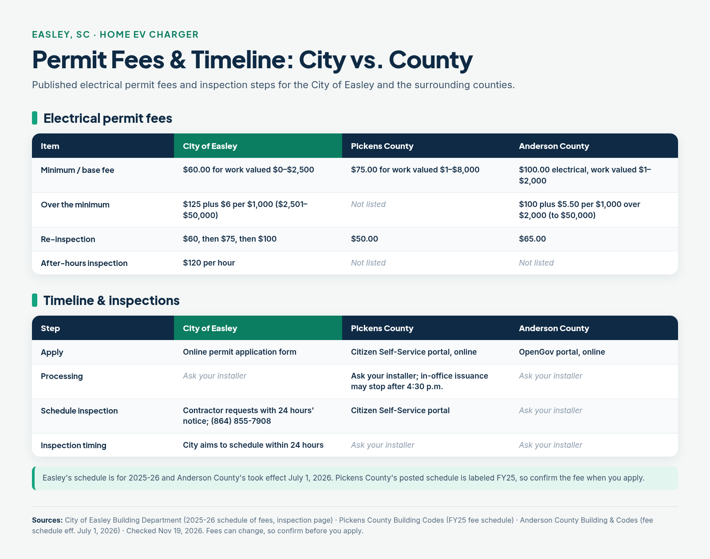

Easley EV Charger Permit Guide
Last Updated On: November 19, 2026
Installing a Level 2 charger at an Easley home means changing your electrical system, and that needs a permit and an inspection. Easley isn't in Greenville County at all. It sits mostly in Pickens County, with a piece in Anderson County, and an Easley mailing address doesn't mean you're inside city limits. Your power company matters too, because many Easley homes get electricity from Easley Combined Utilities, not Duke Energy. This guide covers who issues the permit, how to apply, what it costs, how inspections work, and when Duke's Charger Prep Credit applies.
For how city and county permits differ, see our permits overview: city vs county. For a Greenville County address, see the Greenville EV charger permit guide.
Do you need a permit for a home EV charger in Easley?
Yes. The City of Easley Building Department says a permit is required for electrical changes of any kind (City of Easley Building Department). A new 240-volt circuit for a charger is an electrical change.
City of Easley or the county: who issues your permit?
It depends on whether the property is inside Easley city limits, and if not, which county it's in.
- Inside Easley city limits: the City of Easley Building Department issues the permit.
- Outside city limits, Pickens County side: Pickens County Building Codes issues it.
- Outside city limits, Anderson County side: Anderson County Building & Codes issues it.
How to check if you're inside Easley city limits
- Call the Building Department at (864) 855-7908 with your address.
- Your installer can usually tell you too, since they pull permits in both counties.
How to apply for an EV charger permit in the City of Easley

- Confirm you're in city limits with the Building Department or your installer.
- Fill out the Residential Building Permit Application. The city posts it as an online form.
- Pay the fee (see fees below). It's based on the job value.
- Request the inspection with at least 24 hours' notice. The city's inspection page says the contractor requests it and should have the permit number, the 911 address and the inspection type ready. Inspection scheduling is handled through the Building Department at (864) 855-7908 (City of Easley: Are You Ready for an Inspection?).
- Pass the inspection. The city aims to schedule inspections within 24 hours of the request.
Who files it? Usually your licensed electrician. A homeowner can pull a permit for work on their own primary residence (not a rental), with an Owner/Builder Disclosure filed with Pickens County (City of Easley Building Department).
Contact: City of Easley Building Department, 205 North First Street, Easley, SC 29640. Phone (864) 855-7908. Hours are 8:30 a.m. to 5 p.m., closed 1 to 2 p.m. (City of Easley Building Department).
How to apply outside Easley city limits
Pickens County side
- Apply online. Pickens County uses its Citizen Self-Service portal for permit applications and inspection scheduling (Pickens County Building Codes)
- Pay the fee (see fees below).
- Get the permit issued. The county takes applications until office closing, but may limit in-office permit issuance after 4:30 p.m.
- Schedule the inspection in the same portal.
- Pass the inspection.
Contact: Pickens County Building Codes, 222 McDaniel Ave., B-10, Pickens, SC 29671. Phone (864) 898-5950. Hours are 8 a.m. to 5 p.m. weekdays.
Anderson County side
- Apply online. Anderson County says all permits must be applied for online through its OpenGov permitting portal (Anderson County Building & Codes).
- Pay the fee (see fees below).
- Schedule and pass inspection with the county.
Contact: Anderson County Building & Codes, 401 East River Street, Anderson, SC 29624. Phone (864) 260-4158, email permitting@andersoncountysc.org.
Easley EV charger permit fees
These are the published permit fees. Your exact fee depends on what's on the permit, so your installer will have the final number.
| Item | City of Easley | Pickens County (unincorporated) | Anderson County (unincorporated) |
|---|---|---|---|
| Minimum / base fee | $60.00 for work valued $0 to $2,500 | $75.00 for work valued $1 to $8,000 | $100.00 electrical, work valued $1 to $2,000 |
| Over the minimum | $125 plus $6 per $1,000 ($2,501 to $50,000) | Not listed | $100 plus $5.50 per $1,000 over $2,000 (to $50,000) |
| Re-inspection | $60, then $75, then $100 | $50.00 | $65.00 |
| After-hours inspection | $120 per hour | Not listed | Not listed |
| Source | City 2025-26 schedule of fees (Word file) | Pickens County fee schedule, FY25 (PDF) | Anderson County fee schedule, eff. July 1, 2026 (PDF) |
Easley's and Anderson County's schedules are current for 2025-26 and July 2026. Pickens County's posted schedule is labeled FY25, so confirm the fee when you apply. For a single charger circuit, the job value usually lands in the lowest tier.
How long it takes, and how inspections work

| Step | City of Easley | Pickens County (unincorporated) | Anderson County (unincorporated) |
|---|---|---|---|
| Apply | Residential Building Permit Application, online form | Citizen Self-Service portal, online | OpenGov portal, online |
| Processing time | Not published | Not published; in-office issuance may stop after 4:30 p.m. | Not published |
| Schedule inspection | Contractor requests with 24 hours' notice; (864) 855-7908 | Citizen Self-Service portal | Not published |
| Inspection hours | City aims to schedule within 24 hours | Not published | Not published |
| Inspection types | Not published | Not published | Not published |
Sources: City of Easley: Are You Ready for an Inspection?, Pickens County Building Codes, Anderson County Building & Codes.
If your project includes a panel upgrade, plan for more time, since your utility has to schedule the disconnect and reconnect.
Which power company serves you, and does Duke's Charger Prep Credit apply?
Easley has its own utility. Easley Combined Utilities runs six substations and serves about 17,000 electric customers (Easley Combined Utilities: Electric). Blue Ridge Electric Cooperative serves Pickens and Anderson counties, among others, and Duke Energy Carolinas serves parts of the Upstate, including Anderson County (Duke Energy news release). The name on your power bill tells you which one you have. See which utility serves you.
Duke Energy's Charger Prep Credit
If Duke is your utility, its Charger Prep Credit pays back part of the cost of getting your home ready for a Level 2 charger. It's a Duke program, so it doesn't apply if your power comes from Easley Combined Utilities or an electric co-op. Per Duke's page:
| Cost | Counts toward the credit? |
|---|---|
| Conduit, wiring and outlets supplying the charger | Yes |
| Panel upgrades and breaker installation | Yes |
| EV charger hardware | No |
| Hardware mounting and commissioning | No |
| Pulling permits and fees | No |
There are two ways to get it:
- Customer Credit Option: you pick your electrician, then submit the paid invoice to Duke and get a check. Duke says this covers prep work done in the last four months (Customer Credit Option).
- Contractor Credit Option: Duke helps you choose an electrical contractor, and the credit shows up as a discount on the contractor's final bill (Contractor Credit Option).
Your permit matters here. Duke's latest program report to the SC Public Service Commission says applications are marked invalid without a detailed invoice with separate labor and materials lines, a copy of the approved permit from the local permitting authority, a summary of any grant funding, and proof of EV registration. It also says the service address has to match the address on the EV registration (Duke semi-annual update to the SC PSC, Sept. 2026). Keep a copy of your approved permit.
Duke's page doesn't publish the dollar amount. Ask Duke or your installer for the current credit before you count on it. Read more in our Duke Charger Prep Credit guide.
FAQ
Do I pull the permit or does my electrician?
Usually your electrician, who also requests the inspection. Inside the city, a homeowner can pull a permit for their own primary residence with an Owner/Builder Disclosure filed with Pickens County.
Is Easley in Greenville County?
No. Easley is mostly in Pickens County, with part in Anderson County. Outside city limits, Pickens County Building Codes or Anderson County Building & Codes handles the permit.
How much is an EV charger permit in Easley?
Inside the city, it's $60.00 for work valued up to $2,500. Re-inspections cost $60, then $75, then $100.
How much is it outside city limits?
Pickens County's posted fee is $75.00 for work valued up to $8,000. Anderson County's electrical fee is $100.00 for work valued up to $2,000.
How long does a permit take?
Easley doesn't publish a processing time. Once you have the permit, give the city 24 hours' notice for an inspection.
I'm an Easley Combined Utilities customer. Can I get Duke's Charger Prep Credit?
No. The Charger Prep Credit is a Duke Energy program. Ask Easley Combined Utilities about any EV programs it offers.
Does Duke's credit pay for the permit?
No. Duke's page says pulling permits and permit fees don't count toward the Charger Prep Credit. You still need the approved permit to apply.
Find a licensed installer in Easley
Your installer will handle the permit, the inspection and, if you're with Duke, the paperwork for the credit. See the ranked list of EV charger installers serving Easley, or check what a typical job runs in our installation cost guide.